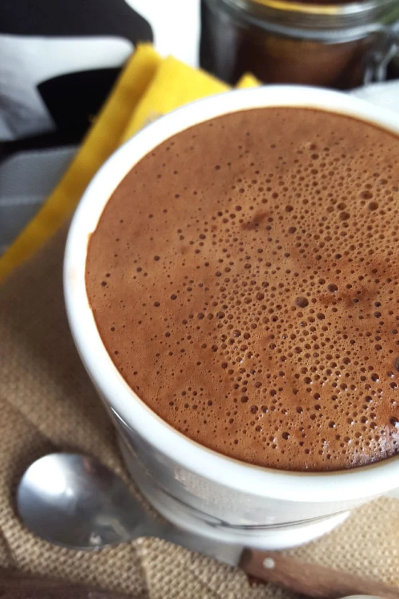

Vegan Mocha>
Assuming you have access to some espresso, this is the best way to curb your sweet tooth and caffine addiction at the same time
What you'll need
- Espresso
- Your choice of Vegan milk, coconut milk is prettyyyy, prettyyyy, pretyyy good
- Baking cocoa
- Sugar
- Water
Steps
Mix sugar and cocoa to a 2:1 ratio
Add just enough hot water to create a syrup like mixture
Shake or mix ingredients until smooth
Add desired amount of Espresso
Fill the rest of the up with vegan milk, warm if you want to drink it hot, cold with ice if you want to drink it cold
Enjoy!